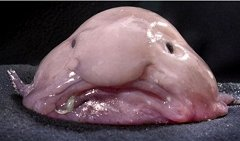

The Latest Headlines from
Cork Bowl 21
Cork Bowl 21
Teams Announced
September 22nd - The rosters for Cork Bowl 21 were
announced on Thursday at a press conference at Corklestick Park with the Red Pandas facing off against the Blobfish. After playing
for the first time with seven players per team in last year's game, the rosters have returned
to the conventional number of six for this year's contest. "Last year had some very unique
circumstances that we needed to work around," remarked Commissioner Patrick Cork. "With Greg and Dustin playing quarterback
and not being able to play defense, we needed to add an extra player. But those circumstances
aren't there this year and we're going back to six-man teams."
Greg Howard will return to quarterback after making his
debut last season to lead the Red Pandas. Howard struggled out of the gate, but settled down to lead his team to an
easy victory completing 42 passes with 20 touchdowns and 4 interceptions. "Last year was definitely a
completely new experience for me," said Howard. "After I got adjusted late in the first half things
really slowed down for me. There won't be any early game jitters this time around." Unlike last year, Howard will be
playing on the defensive side of the ball where he will increase his all-time lead in career tackles (currently at 131). After a year at
receiver, Cork Bowl's all-time leading passer Willy Truitt will be back under center again for the Blobfish.
Truitt had what may have been the best game of his career in Cork Bowl 19 when he completed
a career high 62 passes and tied a Cork Bowl record with 22 touchdowns. "It will be nice to
be back where I belong," said Truitt.
Missing from last year's game will be Dustin Waldrop, Josh
Massey and Jason Sutfin who all made their Cork Bowl debuts in Cork Bowl 20. Returning will be one of Cork Bowl's all-time
greats in Josh Williamson. Williamson established himself from Cork Bowls 5-13, but missed three years from
2004-2006 before playing in Cork Bowls 17 and 18, but has not played in the past two years. "Needless to say,
anytime we get somebody like Josh back in the game it's great," responded Commissioner Cork. "It took some
work to get a deal worked out with him since he's in Virginia now, but we finally came to an agreement
and having him here on December 3rd will be worth every penny.
This year's teams will be a total contrast in styles. For the Red Pandas,
Greg Howard will have a wealth of experience at his disposal. Veterans Chris Cork and Brooks Wilson will join
three-time MVP Robert Trimble, Kevin Ryan and Williamson. "You look at the guys on my team and it's a who's who of
Cork Bowl greats," added Howard. "Every player on our team has established himself and we know exactly what each of them will
bring to the table." The six players combine for 80 years of Cork Bowl experience, compared to just 49 for their opponent.
In an unprecedented situation, the Red Pandas will have the past eight Cork Bowl MVPs on the same
roster (Howard MVP of CB 13 and co-MVP 14, Trimble 15, 18 and 20; Ryan 16, Cork 17, Wilson co-MVP 19). "I think what that
shows is our team is full of winners," remarked Chris Cork. "Each of us knows how to step up when our team needs us to."
They will by far be the more physical team with bruisers such as Howard, Trimble and Wilson on the defensive side of the
ball. "We're going to be aggressive and we're going to enforce our will on them," added Wilson. "The tougher team usually
wins and we're going to make sure that's us. If we can't be tougher I can guarantee we'll be cheaper."
 As for the Blobfish, Willy Truitt will be asked to lead a young, inexperienced team for
one of the only times in his career. There will be a heavy burden placed on the shoulders of the two veteran receivers Jake Hoalt and
Patrick Cork. "There was a time when I welcomed having to carry a big load," remarked Patrick Cork. "But those days
ended several years ago. I think what Willy and I need to do this year is to lead these young guys by example and to
show them what it takes to win a Cork Bowl with our practices over the next few months. They have the physical ability
to be stars, but it takes much more than athleticism to win the big game when it matters. Just ask Tony Romo." While Cork and Truitt have
35 years of experience between them, Hoalt is the next longest tenured player with 8 years, while Woodard, Zehr and Barmes have combined
to play in just six games. Hoalt has established himself as a hard-nosed runner and has caught 31 passes over the past two seasons
combined. Woodard has increased his production in each of his four seasons and will likely need to do so again this season. Zehr
and Barmes made their debuts last year with each showing flashes of stardom. They caught five passes between them and turned four
of them into touchdowns. "They are both explosive players once they get the ball in their hands," remarked Truitt. "They both had
tough situations making their debuts with the seven-man rosters. Neither really found their groove on offense with all the
substitutions so I would expect them to both have impressive numbers this season. I know I have confidence in both of them to
look their way at any time."
Cork Bowl 21 is scheduled to start at 10:00 central time on Saturday, December 3rd.
Back to top
Chris Cork and Wilson Fireworks Start Early in Camp
September 29th - It was only a matter of time before Chris Cork and Brooks Wilson's long-time
rivalry led to some training camp issues, but few thought it would happen in the first week of camp. The surprising part was what
fueled the fire on Wednesday afternoon. "Apparently Chris and Brooks got into a discussion about who was going to be the one to
retire at the end of the season," remarked a team representative. "Brooks' oldest son (Noah) is 12, and that's the age when a number of
Cork Bowl players started their careers. Chris was adamant that he called "dibs" on having Noah take his spot when he turned 13, but
Brooks took offense. Needless to say things got ugly fast."
"I have a notarized document from 2003 that specifically says when Noah is ready to play that he will replace me," said a frustrated
Chris Cork. "If Wilson doesn't like, he can take me to court. I've been waiting for Noah to make his debut for eight years and you better
believe he's taking my spot when he's ready." Wilson, on the other hand, isn't buying it. "He's my kid. If I decide to let him play, it's
my decision whether he takes my spot or not. That's in my contract. Chris is going to have to find another replacement if he thinks he's
getting out before me."
Needless to say, some fellow Red Pandas aren't cracked up about the in-fighting from the two veterans. "I know they've been around a
long time and we all have a ton of respect for them, but it definitely isn't helping our team's focus when two of our team leaders are
arguing about who gets to quit playing first," added quarterback Greg Howard. "We should be focused on this game and not on our pensions.
There will be plenty of time to work that stuff out after the game."
Back to top
Rushing the Passer Returns for First Time Since Cork 12
October 8th - Last year's Cork Bowl will be remembered for breaking ground with the debut of
seven-man rosters. Cork Bowl 21 will be remembered as the year the blitz came back. In a ruling that will likely have a huge impact
on this year's game, Commissioner Patrick Cork made the formal announcement over the weekend that there will be rushing the passer
for the first time since Cork Bowl 12. The return of Kirby Newell from a career-threatening leg injury forced the league to outlaw
blitzing when he played quarterback for the Grisons in Cork Bowl 13. Since then, the rule has remained unchanged. However, the
league has decided that facet of the game will return this year, albeit in limited form.
"We obviously had to make the rule change back in the day for Kirby," remakred Commissioner Cork. "And over the years, there have
been a number of other circumstances that have caused us to leave the rule in place including Tony Cork's return, Reggie Truitt's
injured back and Greg Howard's police academy training. But this year, there's really no reason for us to keep that rule intact so
we're going to give it a try and see what happens."
Unlike years past, there will be stipulations on blitzing. As has been the case in the past, only one defender will be allowed to
rush the passer. However this year, teams will only be allowed to rush the passer one time per possession. "One of the reasons we
got rid of the rule was the constant pressure the quarterbacks were under," added Cork. "It took away from the game itself with the
QB's running for their lives every play. This game was built on throwing the ball so we need to make sure that aspect never goes
away." Being limited to one rush per drive will definitely add to the strategy on the defensive side of the ball. "Frankly I love
that the blitz is back," remarked long-time blitzer Greg Howard. "Teams are going to have to be prepared for it every play, but they're
only going to get it one time. Do you use it early and put them in 2nd/3rd and long? Do you wait until a potential fourth down? There
are a lot of different ways to approach it so we'll have to see how things work out."
Immediately following the announcement, the media bombarded Reggie Truitt's representatives to see if he would be joining the
Blobfish as their defensive coordinator. Truitt, who thrived on complicated blitzing packages during his playing days, would be a huge
addition to the Blobfish. "Reggie taught me everything I know about defensive schemes," commented Willy Truitt. "We would love to have
him come in and work with us but I have no indication right now that it will happen. The Red Pandas definitely have more guys that can
make an impact blitzing than we do, so the schemes and preparation Reggie could provide would go a long way."
Back to top
Blobfish Rumored to Possibly be Leaving Cork Bowl to Join Big 10 Conference
October 23rd - The wave of major universities bolting conferences for more cash has recently made
its impact on Cork Bowl. Sunday afternoon, rumors began to surface that the Big 10 Conference had been wooing the Blobfish to bail out of
Cork Bowl 21 and join the Big Ten Conference. "It's all nonsense," responded a defensive Commissioner Patrick Cork. "It's just another
media-created rumor with no truth to it."
Others, however, aren't so sure. "Let's see here. The Commissioner of Cork Bowl has always been looking for extra revenue for the league
and suddenly someone is throwing millions of dollars out there to anybody that has a football team and we're supposed to believe that he
has no interest in taking that money?" questioned an anonymous source close to the league. "It's all a little too convenient for me. I mean,
he's got his hand in the cookie jar and he can do whatever he wants. It just goes to show that Cork Bowl needs a little more balance of
power at the top so things like this won't happen."
Several players from the Blobfish seemed to be fond of the idea of joining the Big Ten. "As an Illinois fan, it would be a dream to compete
at that level," responded second-year player Aaron Zehr. "As much as I love playing games in front of the fans at Corklestick, to play in
the Horseshoe at Ohio State or The Big House in Michigan would be quite a treat." "I've put up numbers for over a decade that would make most Big Ten
quarterbacks jealous," added Willy Truitt. "I'd love to see what I could do against that type of competition. Would you rather match wits
with the defensive schemes of Joe Paterno or those drawn up by Chris Cork? I mean, come on."
Back to top
Red Pandas Strike May Cancel Cork Bowl 21
November 11th - Cork Bowl 21 is in danger of being cancelled due to a players’ strike of the Red
Panda roster. The Red Panda players seem dissatisfied with the lack of revenue sharing between the players and Commissioner Patrick Cork.
“I’ve played in this game for 15 years, and I haven’t received one dollar of the revenues this game brings in” Red Panda quarterback
Greg Howard said. “And we have to pay for our own uniforms too. Fringed t-shirts and Santa shorts aren’t cheap, you know.”
Brooks Wilson added, “I don’t know how much longer I can play for post-game sandwiches and chili. Some of my teammates are still
living the single life, but I have a family to feed.”
The Red Pandas’ demands include a 40 percent share of all revenue generated, a pension system for veterans of 10 years or more,
and field improvements at Corklestick Park. Commissioner Patrick Cork responded, “Maybe I should require helmets, because these
guys have taken way too many hits to the head. What revenues do they think Cork Bowl produces?” Cork continued, “Sure, we sell a few
DVDs of the game, but any revenue generated is completely cancelled out by expenses like field paint, championship rings, etc. I’m
lucky to break even.” Kevin Ryan is still suspicious though. “Why would he run this thing for 21 years if it wasn’t making
money?” Ryan asked. “Maybe Chris Cork should do an audit on the books; he’s pretty good with numbers. That is, if he’s not on the take, too.”
Back to top
Love and Marriage Run Rampant Leading up to Cork Bowl 21
November 14th - What was once a single man's game, Cork Bowl's family dynamic has changed
considerably over the years with no year seeing more change than this offseason. Of the 14 players to compete in Cork Bowl 20 last year,
only four were married. However, the wedding bells were ringing this offseason as Willy Truitt, Evan Barmes, Robert Trimble and
Josh Williamson tied the knot. Also, Aaron Zehr welcomed his first child into the world with the birth of his daughter in April.
"Needless to say things have changed significantly from last year," remarked Commissioner Patrick Cork. 33% of the players in this year's
game got married - and now for the first time in Cork Bowl history we will have more married men (7) than single men (5) on the field this year."
"Obviously the best part of all the married guys is that we have the opportunity to double our attendance from last year," added
Commissioner Cork. "If Wilson would ever bring his family with him, we could set a single-game attendance record." The new lives of
nearly half of this year's players leaves a lot of things up in the air. "You always wonder if guys are going to go soft once they
get hitched," responded Greg Howard. "That's one reason I'm still single. I don't need that added distraction to my game preparation.
I need to focus on film study and getting the reps in with my receivers. I don't have time to worry about whose turn it is to do dishes
or to go to the grocery store, let alone having kids keep me up at all hours crying. I dealt with that enough rooming with Tomlinson
in high school on road trips."
Back to top
Henney Eyeing Possible Return for Cork Bowl 22
November 20th - Few players have had as much of an instant impact as Jeff Henney did during his
debut in Cork Bowl 11. And few players could draw as much excitement around the league as Henney when he announced, through his
spokesman, that he may be returning to the field next fall for Cork Bowl 22. "I would like to officially announce I am eyeing Cork Bowl
22 as a possible return to the playing field," said the report. "There is still a lot of red tape to cut through, but I'm going to do
all I can to make it happen."
Henney was named MVP his rookie season with a 12 catch, 12 tackle, 3 interceptions for touchdowns performance. He followed that game up
with games of 16, 22, 18 and 18 receptions in Cork Bowls 12, 16, 17 and 18 before making the move to quarterback in Cork Bowl 19 where he
connected on 19 touchdown passes in a tough loss. Knowing there is a chance of him returning to the field has added some energy around
Cork Bowl circles in recent days. "Obviously to have one of the all-time greats back in the game would be a huge lift for the league,"
commented Commissioner Patrick Cork. "There are few players who have combined the excitement, the energy and the attitude that Cork Bowl
has become famous for. He embodies everything Cork Bowl is about. There aren't a lot of Jeff Henneys out there so we're going to do
everything in our power to get him on the field next year."
Henney has been overseas for the past couple of years joining fellow former Cork Bowler Steve Sanders in the far east. Sanders (China)
and Henney (Laos) have been working vigorously the past few years to get the Oriental Cork Bowl league up and running, but Henney senses
the importance of making one last showing in the states. "I really want to cement my legacy and get those milestones that every player
dreams of," remarked Henney. "I'm 14 catches away from 100, 4 touchdown receptions from 30, 48 completions from 100 and 1 touchdown pass
from 20 for my career. I'm not all about the numbers, but it adds a little extra meaning to your career when you can look back and see
those marks by your name." Despite playing only five seasons at receiver, Henney ranks 6th all-time in career receptions with 86. "To see
your name above the likes of Kirby Newell, Reggie Truitt and Ryan Tomlinson is something I never dreamed would happen when I played
my first game ten years ago," added Henney. "Those are the guys you dream of playing with when you're coming up in the ranks, let alone
to be listed alongside them in the record books. It's surreal."
Back to top
The
Preview to End All Previews, The One in Which All Questions are Answered
November 23rd - The following preview was submitted by Cork Bowl veteran
Ryan Tomlinson from his good friend Howie Vague. Vague is being listed
as a possible replacement for "The Scoop" who has let everyone
down this year with his lack of effort.
It's finally here, the preview for one of the greatest games that has
ever been played. The game of kings, if kings would've played the game.
Now that the season has changed and the winds are blowing from a different
directions, the teams have been set, the travel plans have been made,
and thrift shops have been visited. In this preview I'll break the game
and its elements into the raw pieces that make this such a dynamic endeavor.
I take great pride in the detailed research that I have done to bring
you the 'Big Picture' of this occasion.
The Quarterbacks
Some people consider this the most crucial player on the field, and
I agree with them sometimes. This years contest pits two old foes, or
perhaps friends against each other. The throwing techniques of these
players is incomparable to most modern day players, but some will say
otherwise. I predict that at the end of the game both of them will walk
of the field better men for the experience, unless one of them dies.
The Team Names
No names ring truer in sports then these, no names have ever been
spoken with such awe and bemusement as they are. For generations people
will discuss the names, just why they were they picked. Were they picked
to bring honor to the animal gods? Were they picked to ridicule the
animal kingdom?
The Touchdown Dance
One of the most beguiled and celebrated traditions of the game, some
players will celebrate when they watch the film, while others will want
a shot at sweet redemption and will be look towards next years game.
The Play by Play Announcers
Sitting on their throne of judgment they will have some critics, but
others will nod their heads and say, 'that is so true.' There will be
comments that fall short and are Tim McCarver like, and there will be
moments that remind you of some of the most special moments in sports,
those moments that are really, really good.
The First Half
This will be a hard fought battle of the gridiron. Heads will be lowered
in shame, fists will be raised in pride. As the game wears on players
will be breathing hard and wanting that little extra boost. But not
all players will be feeling the burn in the legs and hearts, some will
be strong and carry on as if they've been working out on a regular basis.
The sun will shine if there are no clouds and the rain or snow will
fall if it wants but nothing will be more sure as what happens on that
field.
The Second Half
It'll be a lot like the first, only at the end someone will win, unless
there is overtime. In that case rules will be reviewed and they will
play some sort of 'extra time.'
The Food After the Game
There is no doubt that it will be delicious, and for one, be missed
by this previewer.
Steriods and “The Gay Factor”
Greg Howard
I hope that I have cleared some of the misconceptions and given you
a clearer picture of just what a special day this is to some people.
No one can quite put into words how this game will affect the world
and the people involved.
Back to top
Willy
Truitt Preparing Big Announcement for Pregame Show
November 24th - The Avon Hills Gazette has learned legendary Corkbowl
quarterback Willy Truitt will make a major announcement during the Pre-game
Show for Corkbowl 21. A Westside YMCA tipster overheard the end of a
locker room conversation this past week. "You could hear the excitement
in his voice, but all I caught was the end. He mentioned that he couldn't
wait to end the speculation and put his fans at ease," stated Jamal
Jameson, origin unknown.
Word has spread quickly amongst the Corkbowl community and fans. Twitter
and Facebook were abuzz with speculation. As seen below, fan opinion
runs the gamut.
"The end is near, the end is near," tweeted TruittFan1.
"Hmm, back with Patrick, getting older... #storybookending"
tweeted Corkbowl4Life
"I'll believe it when I see it. He's been working too hard on
his fitness, I'm his witness," tweeted TheRealFergie.
"Whatever, he's all talk," from NewellsTool on Facebook.
For the record, Corkbowl officials maintain that there are no announcements
planned for Game Day. "That goes against league policy," offered
Commissioner Patrick Cork. "That said, since when does anyone follow
league policy. We can't get Howard to wear pants half the time."
His Corkbowl peers didn't hold back in speculating, either.
"He knows his golden-arm is getting a little old, and there is
a new stud in town," gloated Red Pandas Quarterback Greg Howard.
"I sure hope not," said a stunned Jeff Henney. "My whole
comeback is really keyed around playing with Willy."
Truitt's reps were unavailable as of press time, but the AHG did reach
his brother, Reggie Truitt. "No chance. From what I've seen he's
totally rededicated himself. He has not talked to me in a few years
about retirement, but of course he is married now. Maybe Jenn is weary
of him playing into his mid-30s. I can't see him just walking away like
this. He'd want a full year of hype and jersey sales."
Back to top
Jason Sutfin to Announce Cork Bowl 21....If Demands Are Met
November 28th - One of last year's Cork Bowl rookies is preparing for
another rookie campaign on Saturday. Jason Sutfin, a member of the Cork
Bowl 20 Championship Mallards team, will be making his debut behind
the microphone for Cork Bowl 21....as long as his long list of demands
is met. "I'm doing what every world-class athlete does after playing
- going behind the microphone and telling everyone how bad they are
doing," remarked Sutfin. "I'm undefeated in my Cork Bowl career
which not many people can say. Since I've never lost a Cork Bowl, I
feel I have the clout to say whatever I need to say. And nobody on the
field is safe."
Sutfin was asked just weeks ago about announcing the game, and responded
with a long list of demands. Although the contract has not been officially
signed, the Cork Bowl front office staff has been working diligently
to meet as many of Sutfin's requests as possible. The list includes:
1. heated chair
2. coffee. Columbian. grounds free. served at a temperature between
200-204 degrees F. freshly brewed each quarter.
3. 12 - 16oz bottles of Evian
4. private dressing room
5. halftime meal: 6 pc. shrimp cocktail, hamburger (medium well, pickles,onions,
lettuce,tomato,mayo,no bun), 2-gala apples, 1-banana, 16oz whole milk.
cloth napkins.
6. M&Ms served in a gallon size Ziplock brand bag with all brown
M&Ms removed
7. elevated positioning within 20' of out of bounds line, no more than
10' from midfield. Lines of sight should be unobstructed and free of
errant passes from QBs.
8. private hot tub
9. recording equipment should include a previously unused microphone;
5 second delay for censoring any profanities that may be heard on the
playing field, 50" HDTV monitor (to be taken home by the "talent"
at the end of the game) with a live feed of the video being taken at
the game. Accessories should include: latest versions of: Playstation,
XBox, Nintendo Wii and Atari.
10. one pack of Topps baseball cards w/bubble gum
Our union requires an exact duplicate of all items for each announcer,
50% of all items for each retired announcer on site, and 25% of all
items for all future announcers on site.
"Obviously that is an extensive list, but Jason will be worth
all of it if we can come to an agreement," responded Commissioner
Patrick Cork. "Some might say these demands are in the prima donna
territory, and they are absolutely right. But Jason's never been one
to shy away from who he is, and really that's what Cork Bowl is all
about." Sutfin will likely be joined by Mike Miller - who will
be announcing his fourth Cork Bowl. Also, Cork Bowl Hall of Famer Reggie
Truitt is currently in contract negiotiations with the league. Truitt,
who has been working extensively with the Blobfish as a defensive consultant,
has not committed to any in-game responsibilities. "You think Jason's
list is extensive, you should see Reggie's," added Cork. "We're
talking a Hall of Fame player here so Jason's list is nothing compared
to Reg, but with all the married guys this year we are hoping attendance
is way up so there should be some extra money in the budget to work
with."
Back to top
Back to Cork Bowl 21 |